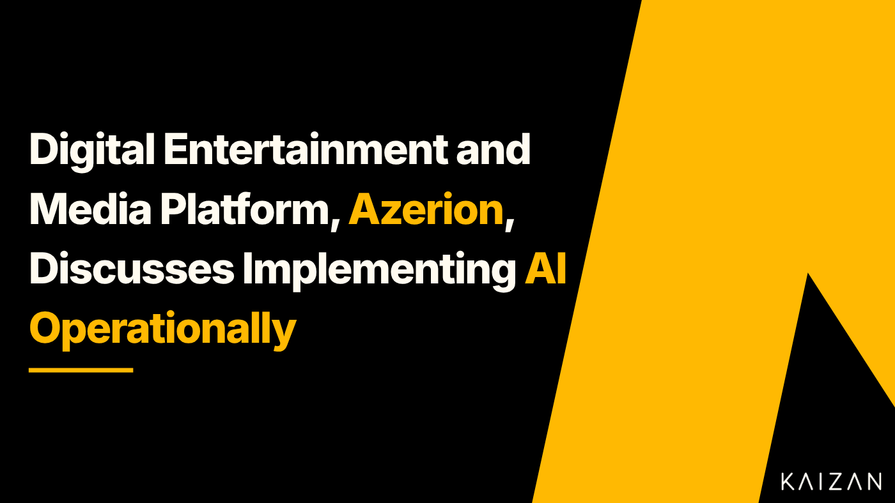

Digital entertainment and media platform, Azerion, discusses implementing AI operationally

Azerion is a leading digital entertainment and media platform, who scale the distribution, consumption and monetization of digital gaming and entertainment content. As a strategic digital brand partner, Azerion is focused on improving the brands of their clients and the audiences they engage with. At the core of what the organisation does is the need for capable Client Services teams who are able to understand the needs and goals of their clients and translate those into actionable results. In progressing their Client Services capabilities, the implementation of automation and AI was viewed as a rudimentary requirement for upskilling the team and consistently delivering for clients.
Part of Azerion’s journey to providing their Client Services teams with consistently reliable and quality service is founded on using a technology stack which increases the productivity of their teams which makes them feel supported not replaceable. Kaizan has been rolled out as the foundational tool to ensure Azerion’s operations are supporting their strategic approach and enabling an AI focused Client Services team, providing real time insights into client sentiment, client satisfaction and ultimately, improving revenues.
Kaizan is an AI powered Client Services platform which empowers teams to increase the metrics they care about most; client satisfaction, profitability, revenue and their own productivity and knowledge. CEO and Co-Founder of Kaizan, Glen Calvert, caught up with Colleen McDonough, Director of Client Services for Azerion (North America) to discuss more.
Q. Kaizan is laser focused on supporting organisations with integrating AI into their operations and how they engage with clients. AI first client service teams demonstrate they value technology and strategically think about how to win. How is Azerion approaching the use of AI within its operations and value proposition?
A. Azerion is strategically integrating AI into its operations and enhancing its value proposition through several key initiatives. Our operations leverage Smart Bidding to predict the optimal pricing for Azerion SSP bids, achieving the desired win rate. We have also implemented URL Classification, utilizing Generative AI, Large Language Models (LLM), and advanced transformer techniques to categorize content from URLs into precise, actionable segments. Additionally, we auto-optimize creative weights to estimate click probabilities and select the best creative for CTR. Our Lookalike Modeling improves reach and conversion by identifying users with similar behavioral traits using Support Vector Machines (SVM). Finally, our AI-driven insights help us understand user engagement patterns, allowing us to develop strategies to enhance user retention and provide superior customer service.
Q. Driving insights is a really key point here actually, one of the things which Kaizan has actually just rolled out is the ability to view clients health via a status score on our dashboard, and this is entirely based on interactions, client sentiment, frequency of communication. That has meant that teams are now viewing the status and doubling down on those clients before it even gets to a point where they could leave the agency. How have you seen client-facing teams improve by using AI?
A. I’ve seen client-facing teams transform significantly with the integration of AI. For instance, AI-powered chatbots have revolutionised customer support by handling common inquiries instantly, which not only improves response times but also allows the rest of the team to concentrate on more complex problems. This leads to higher customer satisfaction and better resource allocation. Also, AI’s ability to analyse vast amounts of data provides client-facing teams with valuable insights, enabling data-driven decision-making. Whether it’s through analysing customer feedback or uncovering trends, AI ensures that teams can continuously improve their service and overall customer experience.
Q. The data is crucial, it’s about triangulating what is happening from multiple sources and bringing all that data together to make educated and informed decisions. What do you expect to see in the future in how AI will affect your industry and company?
A. AI will continue to revolutionise the digital marketing industry as well as Azerion. By leveraging AI, the digital marketing industry will see unprecedented levels of personalization and innovation. For Azerion, AI will not only improve user engagement and retention but also improve operational efficiency which will help drive strategic growth.
Q. Kaizan has seen success with the digital marketing industry because it naturally understands the need for personalisation and innovation to succeed. It’s part of our DNA to help those teams with client retention through the deployment of Kaizan. Any advice for other teams looking to deploy AI across their organisation?
A. Deploying AI across an organisation can be a transformative journey, but it requires careful planning, execution, and ongoing management. First, make sure to identify your business goals using AI and make sure that those goals are aligned with your overall strategy. Second, focus on establishing ethical guidelines and policies for using AI by addressing issues like data privacy and transparency. Finally, define KPIs to measure the success of the AI initiatives and keep all stakeholders informed about the AI projects.